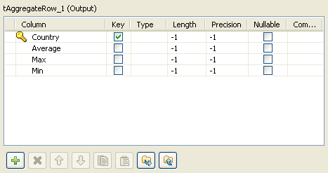
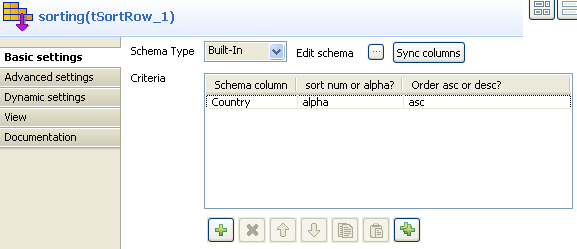
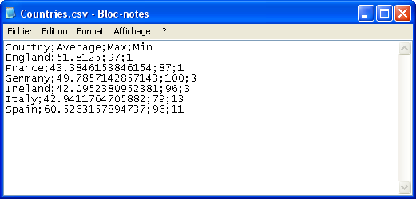

Scenario: Aggregating values and sorting data
The following scenario describes a four-component job. As input component, a CSV file contains countries and notation values to be sorted by best average value. This component is connected to a tAggregateRow operator, in charge of the average calculation then to a tSortRow component for the ascending sort. The output flow goes to the new csv file.

- From the File folder in the Palette, click and drop a tFileInputCSV component.
- Click on the label and rename it as Countries. Or rename it from the View tab panel
- In the Properties tab panel of this component, define the filepath and the delimitation criteria. Or select the metadata file in the repository if it exists.
- Click on Edit schema... and set the columns: Countries and Points to match the file structure. If your file description is stored in the Metadata area of the Repository, the schema is automatically uploaded when you click on Repository in Schema type field.
- Then from the Processing folder in the Palette, click and drop a tAggregateRow component. Rename it as Calculation.
- Connect Countries to Calculation via a right-click and select Row > Main.
- Double-click on Calculation (tAggregateRow component) to set the properties. Click on Edit schema and define the output schema. You can add as many columns as you need to hold the set operations results in the output flow.
- In this example, we'll calculate the average notation value and we will display the max and the min notation for each country, given that each country holds several notations. Click OK when the schema is complete.
- To carry out the various set operations, back in the Properties panel, define the sets holding the operations in the Group By area. In this example, select Country as group by column. Note that the output column needs to be defined a key field in the schema. The first column mentioned as output column in the Group By table is the main set of calculation. All other output sets will be secondary by order of display.
- Choose the input column which the values will be taken from.
- Then fill in the various operations to be carried out. The functions are average, min, max for this use case. Select the Input columns, where the values are taken from.
- Click and drop a tSortRow component from the Palette onto the modeling workspace. For more information regarding this component , see tSortRow properties.
- Connect the tAggregateRow to this new component using a row main link.
- On the Properties tab of the tSortRow component, define the column the sorting is based on, the sorting type and order.
- In this case, the column to be sorted by is Country, the sort type is alphabetical and the order is ascending.
- Add a last component to your job, to set the output flow. Click and drop a tFileOutputDelimited and define it.
- Connect the tSortRow component to this output component.
- In the Properties panel, enter the output filepath. Edit the schema if need be. In this case the delimited file is of csv type. And check the Include Header box to reuse the schema column labels in your output flow.
- Press F6 to execute the job. The csv file thus created contains the aggregating result.



